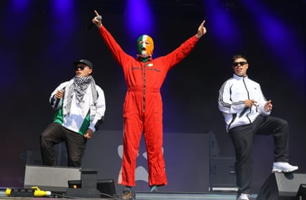
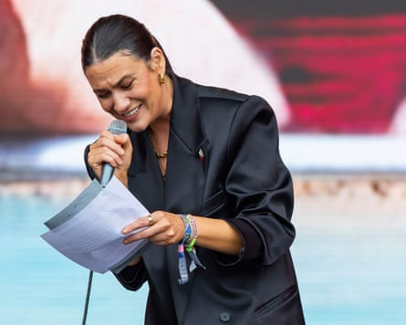

The organisers of Glastonbury have said they are “appalled” by comments made by Bob Vylan after the punk duo appeared to incite violence, something the festival said went against its ethos of “hope, unity, peace and love”.
At the West Holts stage on Saturday afternoon, the London group led a chant of “death, death to the IDF”, referring to the Israel Defense Forces.
Describing himself as a “violent punk”, the frontman of the duo, Bobby Vylan, said: “Sometimes we have to get our message across with violence because that’s the only language some people speak, unfortunately.”
Their set, which was before that of the Irish rap trio Kneecap, was broadcast live on the BBC but has since been removed from its streaming services. A BBC spokesperson previously said some of Bob Vylan’s comments were “deeply offensive”.
A decision had been made before the Kneecap performance not to screen it live, due to fears it would breach “editorial guidelines” on impartiality.
Meanwhile, Avon and Somerset police said the force was investigating both performances to see if any offences had been committed.
The performance by the Irish rappers Kneecap is also under investigation by police.Photograph: David Levene/The Guardian
Emily Eavis, the organiser of Glastonbury, issued a joint statement condemning Bob Vylan’s words, writing: “As a festival, we stand against all forms of war and terrorism. We will always believe in – and actively campaign for – hope, unity, peace and love.
“With almost 4,000 performances at Glastonbury 2025 , there will inevitably be artists and speakers appearing on our stages whose views we do not share, and a performer’s presence here should never be seen as a tacit endorsement of their opinions and beliefs.
“However, we are appalled by the statements made from the West Holts stage by Bob Vylan yesterday. Their chants very much crossed a line and we are urgently reminding everyone involved in the production of the festival that there is no place at Glastonbury for antisemitism, hate speech or incitement to violence.”
Keir Starmer, the UK prime minister, told the Telegraph: “There is no excuse for this kind of appalling hate speech. I said that Kneecap should not be given a platform and that goes for any other performers making threats or inciting violence. The BBC needs to explain how these scenes came to be broadcast.”
Wes Streeting earlier described the chanting as “appalling” and said the BBC and Glastonbury had questions to answer, but he also had strong words for Israel.
Responding to a statement from the Israeli embassy condemning the performance, the health secretary said: “Firstly, I do think that if I take the equivalent of the war in Ukraine, I’m unequivocal about which side of that war I’m on. I want Ukraine to win. Would I be celebrating or chanting for the death of Russian soldiers? No, I want to see an end to the war, and I want to see an end to the conflict.
“I’d also say to the Israeli embassy, get your own house in order in terms of the conduct of your own citizens and the settlers in the West Bank. So, you know, I think there’s a serious point there by the Israeli embassy I take seriously. I wish they’d take the violence of their own citizens towards Palestinians more seriously.”
Nadine Shah read an open letter from Artists for Palestine UK in support of the activist group Palestine Action during her set.Photograph: Jonny Weeks/The Guardian
During the festival, artists from the full cross-section of the music scene showed their support for the Palestinian cause.
CMAT and the Libertines shouted “Free Palestine” during their sets – as did Gary Lineker at the end of his talk – while Joy Crookes , TV on the Radio, Sorry and Paloma Faith all had Palestinian flags or keffiyeh scarves on stage.
During her set early Sunday afternoon, the musician Nadine Shah performed in front of a backdrop showing the destruction in Gaza. She told the crowd, many of whom were waving Palestinian flags: “I just don’t like seeing people being killed.”
Shah read an open letter from Artists for Palestine UK in support of the activist group Palestine Action , whom the home secretary, Yvette Cooper, has planned to proscribe as a terror organisation, if a Commons vote goes her way next week.
It read: “Palestine Action is intervening to stop a genocide. It is acting to save life. We deplore the government’s decision to proscribe it. Labelling non-violent direct action as terrorism is an abuse of language and an attack on democracy.
“The real threat to the life of the nation comes not from Palestine Action, but from the home secretary’s efforts to ban it. We call on the government to withdraw its proscription of Palestine action and to stop arming Israel.”
Shah added: “And if I read this out after 4 July, I can potentially be prosecuted for that.”
The Israeli embassy said of the Bob Vylan performance that it was “deeply disturbed by the inflammatory and hateful rhetoric expressed on stage at the Glastonbury festival”.
A statement on X said: “Freedom of expression is a cornerstone of democracy. But when speech crosses into incitement, hatred, and advocacy of ethnic cleansing, it must be called out – especially when amplified by public figures on prominent platforms.
“Chants such as ‘Death to the IDF’ and ‘From the river to the sea’ are slogans that advocate for the dismantling of the state of Israel and implicitly call for the elimination of Jewish self-determination. When such messages are delivered before tens of thousands of festivalgoers and met with applause, it raises serious concerns about the normalisation of extremist language and the glorification of violence.”